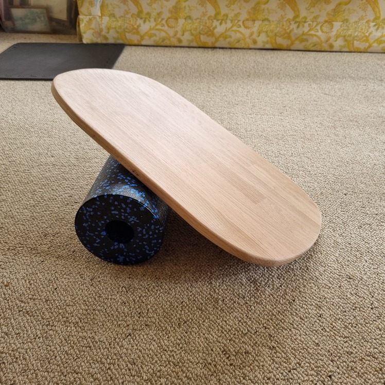
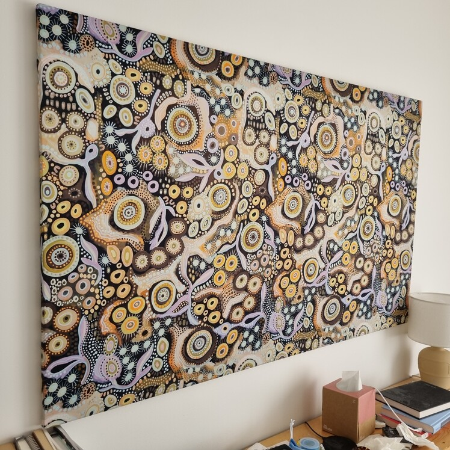

Woodworking projects
Balance board
Date: 6 Jan 2023

Desc: Design inspiration from the Indo Board, this board was made from a 550mm x 18mm Round Okoume panel on special for $6. The edges were cut straight using a circular saw, then corners shaped with a jigsaw. The board edge was then routed with a quarter circle bit, sanded down and finished with clear polyurethane coating.
Art print frame
Date: 6 Jan 2023

Desc: This one was created in a couple of hours using some old trim scrap peices from the garage. They were sanded down, cut to size and then dowelled together (rather than a miter join). The fabric was then installed and tensioned using a nail gun.
TODO Workbench
Date: 3 Jan 2023
Entryway bench
Date: 23 Dec 2022

Desc: Built to suit the Ikea entryway shelving the 18mm Red Oak panel was cut to size. The Ikea threaded inserts were installed in the panel, the front edge was routed using a quarter circle bit and finished with a coat of clear polyurethane.
Plant ladder
Date: 18 Dec 2022
Desc: This simple job was created from two square pine lengths and a dowel. The drill press was used to cut inserts for the dowel lengths and the ladder was assembled, no glue or fasteners.
Builtin workbench
Date: 11 Dec 2022
Desc: The garage builtin workbench was built using spoted gum panels (cheapest available panel), MDF board coated with BIN sealer for the supports, and standard pegboard panels. The bench panels are fixed to the studs using steel brackets. In hind sight I would've built a proper support rather than the MDF and focued on better quality levelling.